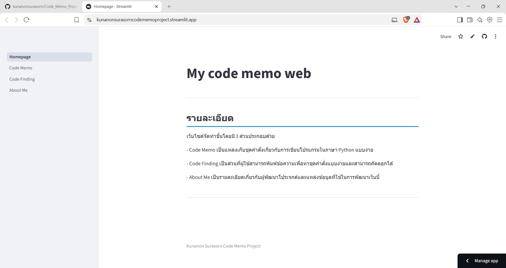
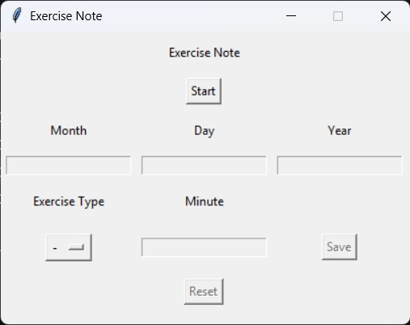

โปรเจกต์ส่วนตัว
โปรเจกต์ส่วนตัวเป็นโปรเจกต์ที่จัดทำขึ้นมาเพื่อเรียนรู้ด้วยตัวเองผ่านการทำโปรเจกต์เพื่อให้เกิดความคุ้นเคยในการเขียนโปรแกรม และ นำไอเดียในหัวมาสร้างเป็นโปรแกรมขึ้นจริงๆ
1. Code Memo Project

GitHub : https://github.com/kunanonsurasorn/Code_Memo_Project
Website : https://kunanonsurasorncodememoproject.streamlit.app/
รายละเอียดโปรเจกต์
โปรเจกต์พัฒนา Web Application เกี่ยวกับการเขียนโปรแกรมโดยใช้ Library ของภาษา Python ชื่อว่า Streamlit
2. Exercise_Note

GitHub : https://github.com/kunanonsurasorn/Exercise_Note
รายละเอียดโปรเจกต์
โปรเจกต์การพัฒนา Graphical User Interface สำหรับบันทึกข้อมูลการออกกำลังกาย